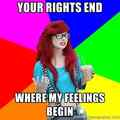

Anton Hagen is a multilingual writer from the UK whose joys and woes living in different parts of Europe inspired him to contribute philosophical pieces to the manosphere, with the odd caustic joke.


The topic of bisexuality keeps cropping up time and time again. It’s constantly rammed down our throats: taking the form of either vacuous gossip about the “bi-curious” escapades of an acquaintance or vapid celebrity, or the even more tiresome bilge concerning “biphobia” and bigotry.
In this article, we shall examine how refusing to take bisexuals seriously is a perfectly rational point of view to hold, after having examined certain aspects of this phenomenon in closer detail.
In the 21st Century, it is becoming increasingly more and more laughable to suggest that homophobia is rampant, when all television, entertainment and culture seem to be catered towards the tastes of gay men: just looking through a TV guide or turning on the radio confirms this assertion.
Yet it is even more ridiculous to suggest that we live in a culture of “biphobia.” There has been extremely little evidence in history which suggests that bisexuals have been more severely treated than homosexuals and heterosexuals.
Despite this fact, “biphobia” has become an accepted term. Furthermore, it is used incorrectly to describe anyone who questions bisexuality in any shape or form, as opposed to denote those who genuinely loathe and despise bisexuals (of whom there are very few).
By classing the opinions of those with whom they disagree as an irrational “phobia,” LGBT activists are able to shun counter-arguments as being inherently flawed and diseased, without having to tackle the assertion with reason and evidence. This tactic is a favorite among leftists (e.g. transphobia, homophobia, etc.)

A writer for the Huffington Post has clearly stated:
“I think biphobia should be in the DSM, because I think it is a mental illness.”
The term “biphobia” has just become a means of suppressing reasoned arguments and healthy skepticism by portraying their opponents as being mentally deranged. It could not be more typical of the totalitarian progressive movement.
There is no such thing as biphobia: there are only those who do not wholeheartedly embrace bisexuals and shower them in praise and compliments for being so open-minded and adventurous; there is absolutely nothing wrong with that.
Far from being a minority of poor, oppressed, counter-cultural victims, bisexuals are extolled and exalted in modern culture. From Madonna and Britney Spears’ kiss at that god awful music show all the way up to the Mozart and Beethoven of our age (Lady Gaga and Katy Perry), bisexual behavior is portrayed as “cool” and fashionable.
Impressionable youths therefore gravitate to such behavior because it gives them a sense of identity and excitement. They engage in bisexuality as an expression of faux-individualism, in an attempt to distance themselves from what they believe to be the bigoted, narrow-minded majority.
They are of course, all completely deluded. They think they’re unique, yet all they are doing is following a trend which has been concocted for them by MTV and record companies. Bisexuality has simply become a fashion statement, and very little more.

In Tuthmosis’ famous article, he lists claiming to be bisexual as a major slut tell. This could not be more true. Many of the other signs mentioned in that article stem from an adolescent, pseudo-rebellious attitude (e.g. tattoos, piercings, swearing, drugs etc.)
Bisexuality is simply another form of immature revolt: by challenging the supposed “heteronormative” culture, they are trying to affirm themselves as individualistic, exciting people. This childish attitude manifests itself in bisexuality, promiscuity, and self-destructive behavior.
Very often, youths do not have any major achievements or unique personality on which to define themselves; they therefore jump at any opportunity to stand out from the crowd. Unfortunately, the “sex-positive” bisexual culture of today just happens to be the means to that end.
The rebellious, childish youths described above are not fit for long-term relationships. It is impossible to be bisexual and maintain a monogamous commitment: one half of one’s sexuality must be renounced before entering into a relationship with a single person. Unfortunately the bisexuals will argue that they have the right to “be who they want to be” and claim “I am what I am.”
Monogamous relationships are based on self-restraint, compromise, and mutual understanding. Someone who continues to assert that they wish to sleep with members of both sexes whilst in a long-term relationship simply lacks the above virtues and has no empathy for their partner’s feelings, only caring for themselves and their carnal desires.
Were someone to vow full commitment to a single partner, they would obviously have to abandon any desire for someone of a different sex to their partner. This is a perfectly moral and reasonable expectation. Bisexuality is usually confined to the pre-adult phase of sleeping around and experimentation. It is therefore very difficult to view it something mature and worthy of anything other than condescension.
Having said all the above, there is still reasonable scientific doubt as to the actual existence of bisexuality. A recent study investigating this naturally attracted a lot of negative attention from the liberal media powerhouse. In this study, it was determined that thirty males who identified themselves as bisexual were indistinguishable from homosexuals in their hormonal responses to pornography. The study can be read online here.
Dr. Michael Bailey, one of the conductors of the study, noted: “I’m not denying that bisexual behavior exists, but I am saying that in men there’s no hint that true bisexual arousal exists, and that for men arousal is orientation.”
Skepticism over the existence of bisexuality continues to this day. We still cannot determine at this stage whether it categorically exists or doesn’t, but it is downright foolish and disrespectful to label those who question it as having a “phobia” or being “bigoted.” The burden of proof remains on those who argue for its existence, rather than those who claim its absence.
It is not irrational or incorrect to hold a healthy, skeptical attitude towards bisexuality. Furthermore, those who doubt it should not be classed as intolerant or bigoted. Upon closer examination of the matter, it appears to be linked to juvenile irresponsibility and typically millennial, liberal attitudes towards sex, relationships, and politics. It is therefore perfectly reasonable to cast doubt upon it.
Undoubtedly, the leftists will jeer, howl and screech their vitriol against such an objective examination of their degenerate habits. Questionable behavior such as bisexuality should be repudiated if we are to gain a deeper understanding of ourselves and the world around us as a whole.
Read More: 3 Reasons Why America Can’t Afford Obesity